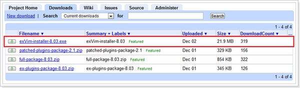
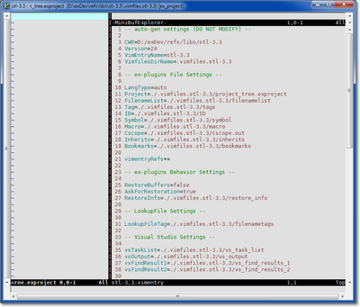

Quick Start in Windows
Install
1. download the exVim-installer-x.xx.exe from download list

2. full install it. ( for example: d:\exDev )
Warning: The id-utils in exVim have permission issue to access files under c:/Programme Files/, please avoid to install exVim in this directory.
Getting Start
1. Go to a project you are working on, for example “d:/project/my_project”.
2. In the root of the project, create an empty file with suffix .vimentry, For example “d:/project/my_project/my_project.vimentry”.
3. Use vim open (“open with…” vim for example) the .vimentry file you create. If every thing are right, the exVim will create a quick_gen_project[your project name]_autogen.bat file and a .vimfiles.[your project name] folder, and then you will see your vim open like the picture below:

4. Move your cursor to the project-window, press <leader>R, it will explore the project file in project window as the picture show:
Note: <leader>R here means press key \, then press shift + r (uppercase “r”). vim recommend 3rd-party plugins use <leader> (aka. ) to begin their operations, and the operations in vim are case sensitive.

5. Type :Up command, the command will run the quick_gen_project[your project name]autogen.bat script, it will generate files such as tags, IDs, symbols… and store them in .vimfiles.[your project name] folder. exVim will use these these files when you editing codes in it.
Note: :Up command is the short of :Up[date] command. In vim you can type command in short name.
You are now ready to use exVim in your project.
Useful Operations
<leader>gg: Global search current word under cursor, show the result in exGlobalSearch select window.<leader>]: Search current word under cursor as tags(defines and declarations), show the result in exTagSelect window.<leader>sg: Search current word under cursor, filter and show the result in exSymbolTable quick-view window.<leader>gv: Process current word under cursor as class-name, show its inherit map by your image viewer.alt-1/2/3/4, <header>h1/2/3/4 (Terminal): Hilight/UnHighlight words with highlight color 1,2,3,4 (can be used in visual mode).:GS {word}: Search {word} in ID database, and list the matched results in exGlobalSearch select-window.:TS {tag-name}: Search a tag by {tag-name}, list the possible results in select-window.:Up[date] [{args}]: Update exVim project files.